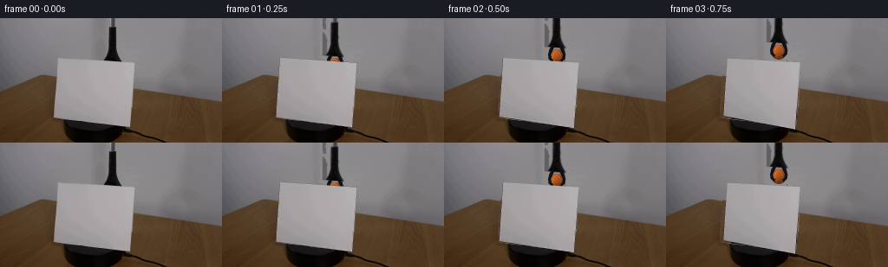
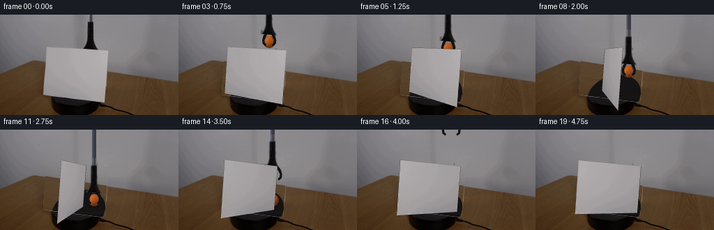
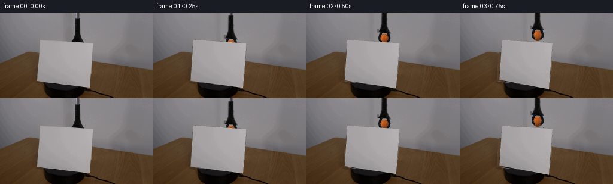

CODING AGENTS AS PIXEL WORLD MODELS
traex/GPT-6.1-Sol · 0006
点击播放 · 原生 RGB 像素
逐轮保存的候选
回放视频、检查图与代码变化。
每份候选均可单独播放。实际图片检查记录在下方工具轨迹中。
候选 01播放与检查图
点击播放 · 原生 RGB 像素

展开代码变化
--- 上一保存版本
+++ 本次保存版本
@@ -0,0 +1,232 @@
+from pathlib import Path
+import numpy as np
+from PIL import Image
+import cv2
+from scipy.ndimage import gaussian_filter
+import artifact_io
+
+ROOT=Path(__file__).resolve().parent
+W,H=256,144
+S=3
+rng=np.random.default_rng(871)
+original=np.array(Image.open(ROOT/'first_frame.png').convert('RGB'))
+im=original.astype(np.float32)
+Y,X=np.indices((H,W)); XX=(X-128)/128; YY=(Y-50)/100
+# Four measured paper corners; all content outside the moving setup is retained.
+quad=np.array([[66.3,45.5],[155.6,51.8],[149.8,125.7],[61.8,114.7]],np.float32)
+
+def polygon_mask(pts,scale=S):
+ m=np.zeros((H*scale,W*scale),np.uint8)
+ cv2.fillPoly(m,[np.round(np.array(pts)*scale).astype(np.int32)],255)
+ return cv2.resize(m,(W,H),interpolation=cv2.INTER_AREA).astype(float)/255
+
+cardmask=polygon_mask(quad)
+# Include the thin original shadow next to the suspended tool in its clean plate.
+toolmask=np.zeros((H,W),np.float32)
+for y in range(51):
+ left=107 if y<47 else 112
+ right=141
+ toolmask[y,left:right+1]=1
+# The clean plate is estimated from the unoccluded wall and tabletop, not another image.
+wood=(im[:,:,0]-im[:,:,1]>14)&(im[:,:,1]-im[:,:,2]>14)&(cardmask<.01)
+wall=(Y<82)&(cardmask<.01)&(toolmask<.01)&~wood
+
+def polyfit(region,order):
+ terms=np.array([XX**i*YY**j for i in range(order+1) for j in range(4) if i+j<=order])
+ A=terms[:,region].T
+ coeff=np.linalg.lstsq(A,im[region],rcond=None)[0]
+ return np.einsum('kij,kc->ijc',terms,coeff)
+wallplate=polyfit(wall,5)
+woodplate=polyfit(wood,3)
+noise=rng.normal(size=(H,W))
+wallplate+=gaussian_filter(noise,.65)[:,:,None]*.7
+# Reconstruct fine longitudinal wood grain in the area initially screened off.
+grain=gaussian_filter(rng.normal(size=(H,W)),(.42,2.4))
+grain=grain/(grain.std()+1e-8)
+grain=grain*1.25+1.1*np.sin(Y*3.1-X*.16)+.65*np.sin(Y*.67-X*.023)
+woodplate+=grain[:,:,None]*np.array([1,.94,.8])
+backedge=np.interp(np.arange(W),[0,48,64,155,255],[85,65.3,66,80.3,97])
+tablealpha=np.clip(Y-backedge[None,:]+.5,0,1)
+clean=wallplate*(1-tablealpha[:,:,None])+woodplate*tablealpha[:,:,None]
+# The original black support is circular in the table plane, seen obliquely.
+ell=np.zeros((H*S,W*S),np.uint8)
+cv2.ellipse(ell,(round(112.17*S),round(117.14*S)),(round(29.26*S),round(39.64*S)),68.92,0,360,255,-1,cv2.LINE_AA)
+platformmask=cv2.resize(ell,(W,H),interpolation=cv2.INTER_AREA)/255.
+platformnoise=gaussian_filter(rng.normal(size=(H,W)),.65)
+platform=np.zeros((H,W,3))
+pval=19.8-11.5*np.clip((Y-119)/15,0,1)+platformnoise*1.1
+pval+=1.7*np.exp(-((Y-119)/2.5)**2)
+platform[:,:,0]=pval+1;platform[:,:,1]=pval-.8;platform[:,:,2]=pval-.9
+clean=clean*(1-platformmask[:,:,None])+platform*platformmask[:,:,None]
+# A small seam-safe transition at the measured silhouettes.
+erase=np.maximum(cardmask,toolmask)
+# Feather the outside of the tool cleanup patch, leaving the shaft fully removed.
+for y in range(51):
+ for x in range(107,114):
+ toolmask[y,x]*=(x-106)/8
+ for x in range(137,142):
+ toolmask[y,x]*=(142-x)/6
+# Fully opaque cleanup where the actual tool is located.
+toolmask[(Y<51)&(X>=119)&(X<=138)]=1
+# The card's top excludes the shaft's end, so both masks are needed.
+erase=np.maximum(cardmask,toolmask)
+background=im*(1-erase[:,:,None])+clean*erase[:,:,None]
+
+# Rectify the photographed paper into material coordinates.
+TW,TH=360,288
+uv=np.array([[0,0],[TW-1,0],[TW-1,TH-1],[0,TH-1]],np.float32)
+rectify=cv2.getPerspectiveTransform(quad,uv)
+texture=cv2.warpPerspective(im,rectify,(TW,TH),flags=cv2.INTER_CUBIC)
+# Repair only the very top boundary affected by the original gripping jaws.
+for v in range(0,15):
+ texture[v]=texture[20] + (20-v)*.018
+# Feather sub-pixel boundary contamination into nearby interior material.
+texture[:,:4]=texture[:,4:5];texture[:,-4:]=texture[:,-5:-4]
+texture[-3:]=texture[-5:-4]
+
+# Recover a perspective camera and vertical screen pose from the first frame.
+K=np.array([[200.,0,128],[0,200.,72],[0,0,1.]])
+obj=np.array([[-45,-72,0],[45,-72,0],[45,0,0],[-45,0,0]],float)
+_,rvec,tvec=cv2.solvePnP(obj,quad.astype(float),K,None)
+R=cv2.Rodrigues(rvec)[0]
+proj0=cv2.projectPoints(obj,rvec,tvec,K,None)[0].reshape(-1,2)
+calib=cv2.getPerspectiveTransform(proj0.astype(np.float32),quad)
+
+def screen_corners(angle):
+ a=np.deg2rad(angle)
+ # Clockwise rotation, seen from above the tabletop.
+ ry=np.array([[np.cos(a),0,np.sin(a)],[0,1,0],[-np.sin(a),0,np.cos(a)]])
+ rv=cv2.Rodrigues(R@ry)[0]
+ p=cv2.projectPoints(obj,rv,tvec,K,None)[0].reshape(-1,2)
+ return cv2.perspectiveTransform(p[None].astype(np.float32),calib)[0]
+
+# Extract the photographed blue-black shaft and the upper gripping assembly.
+# Alpha is inferred numerically from the grey wall surrounding it.
+toolalpha=np.zeros((H,W),np.float32)
+for y in range(51):
+ for x in range(116,142):
+ c=im[y,x].mean()
+ # At the paper's boundary, stop where the original cardstock starts.
+ if c<126:
+ toolalpha[y,x]=np.clip((139-c)/35,0,1)
+# Boundary antialias color removal eliminates a light-grey sprite outline.
+wallref=wallplate.copy()
+trgb=np.clip((im-wallref*(1-toolalpha[:,:,None]))/np.maximum(toolalpha[:,:,None],1e-3),0,255)
+spr=np.dstack([trgb,toolalpha*255]).astype(np.float32)
+sprhi=cv2.resize(spr,(W*S,H*S),interpolation=cv2.INTER_CUBIC)
+
+
+def draw_poly(arr,points,color):
+ cv2.fillPoly(arr,[np.round(np.array(points)*S).astype(np.int32)],color,lineType=cv2.LINE_AA)
+
+def over_rgb(base,color,alpha):
+ return base*(1-alpha[:,:,None])+color*alpha[:,:,None]
+
+# Ball material: dim orange felt, spherical lighting, a pair of cream curved seams.
+ballnoise=gaussian_filter(rng.normal(size=(H*S,W*S)),.35)
+def ball_layer(cx,cy,r=8.8):
+ yh,xh=np.indices((H*S,W*S))
+ nx=(xh/S-cx)/r;ny=(yh/S-cy)/r
+ rr=nx*nx+ny*ny
+ alpha=np.clip((1-np.sqrt(rr))*r*S+.5,0,1)
+ z=np.sqrt(np.maximum(0,1-rr))
+ light=np.maximum(0,-nx*.42-ny*.53+z*.73)
+ shade=.46+.53*light
+ col=shade[:,:,None]*np.array([199.,94.,33.])
+ col+=ballnoise[:,:,None]*np.array([2.3,1.6,1.1])
+ # Felt seam as two projected arcs on the sphere, not a flat circle.
+ arc=.53-.53*ny*ny+.10*ny
+ d=np.minimum(abs(nx-arc),abs(nx+arc))
+ seam=np.exp(-(d*r/.40)**2)*(.7+.3*z)
+ seamcol=(.50+.42*light)[:,:,None]*np.array([214.,176.,106.])
+ col=col*(1-seam[:,:,None]*.70)+seamcol*seam[:,:,None]*.70
+ rgb=cv2.resize(col,(W,H),interpolation=cv2.INTER_AREA)
+ a=cv2.resize(alpha,(W,H),interpolation=cv2.INTER_AREA)
+ prem=cv2.resize(col*alpha[:,:,None],(W,H),interpolation=cv2.INTER_AREA)
+ return prem,a
+
+def gripper_layer(dx,dy,opening=0):
+ layer=np.zeros((H*S,W*S,4),np.float32)
+ # Extend the narrow blue-black handle naturally through the frame boundary.
+ if dy>0:
+ draw_poly(layer,[(127+dx,-2),(132.8+dx,-2),(132.8+dx,dy+12),(127+dx,dy+12)],(57,58,68,255))
+ cv2.line(layer,(round((128.1+dx)*S),0),(round((128.1+dx)*S),round((dy+12)*S)),(78,82,96,255),S,cv2.LINE_AA)
+ translated=cv2.warpAffine(sprhi,np.array([[1,0,dx*S],[0,1,dy*S]],float),(W*S,H*S),flags=cv2.INTER_LINEAR)
+ ta=np.clip(translated[:,:,3]/255.,0,1)
+ layer[:,:,:3]=layer[:,:,:3]*(1-ta[:,:,None])+translated[:,:,:3]*ta[:,:,None]
+ layer[:,:,3]=np.maximum(layer[:,:,3],translated[:,:,3])
+ # Two compliant fingers continue behind the original paper edge.
+ for side in [-1,1]:
+ c=130+dx
+ def p(x,y):return(c+side*(x+opening),y+dy)
+ pts=[p(4.2,46),p(8.2,51),p(10.1,57.5),p(9.4,62.8),p(5.5,66),p(4.1,63.8),p(6.7,61.4),p(7.0,57.3),p(5.1,52.9),p(2.9,49)]
+ draw_poly(layer,pts,(13,16,20,255))
+ # A restrained blue highlight at the outer rim of each black jaw.
+ pp=np.round(np.array([p(6.5,50.4),p(9.2,56.5),p(8.5,61.8)])*S).astype(np.int32)
+ cv2.polylines(layer,[pp],False,(37,45,57,255),max(1,S//2),cv2.LINE_AA)
+ a=np.clip(layer[:,:,3]/255.,0,1)
+ prem=cv2.resize(layer[:,:,:3]*a[:,:,None],(W,H),interpolation=cv2.INTER_AREA)
+ a=cv2.resize(a,(W,H),interpolation=cv2.INTER_AREA)
+ return prem,a
+
+def paper_layer(angle):
+ p=screen_corners(angle)
+ # Both faces are the same unprinted cardstock, with their illumination
+ # varying continuously with the table rotation.
+ shade=1-.085*np.sin(np.deg2rad(angle))**2
+ th=cv2.getPerspectiveTransform(uv,p*S)
+ tex=cv2.warpPerspective(texture*shade,th,(W*S,H*S),flags=cv2.INTER_CUBIC)
+ mask=np.zeros((H*S,W*S),np.uint8)
+ cv2.fillPoly(mask,[np.round(p*S).astype(np.int32)],255,cv2.LINE_AA)
+ # Thin physical edge is most visible when the face turns edge-on.
+ edge=np.zeros((H*S,W*S,4),np.float32)
+ if abs(np.linalg.det(np.array([p[1]-p[0],p[3]-p[0]])))<200:
+ pp=np.round(p*S).astype(np.int32)
+ cv2.polylines(edge,[pp],True,(119,115,118,255),max(1,round(.6*S)),cv2.LINE_AA)
+ a=mask.astype(float)/255
+ col=tex*a[:,:,None]
+ ea=np.clip(edge[:,:,3]/255,0,1)
+ col=col*(1-ea[:,:,None])+edge[:,:,:3]*ea[:,:,None]
+ a=np.maximum(a,ea)
+ return cv2.resize(col,(W,H),interpolation=cv2.INTER_AREA),cv2.resize(a,(W,H),interpolation=cv2.INTER_AREA)
+
+def ease(u):
+ u=np.clip(u,0,1)
+ return u*u*(3-2*u)
+
+frames=[original.copy()]
+for i in range(1,20):
+ t=i/4
+ # Lift just enough to show the ball, then lower it under control behind
+ # the screen and release onto the back of the tabletop.
+ if t<=.75:
+ cy=60-21*ease(t/.75)
+ elif t<=2.75:
+ cy=39+62*ease((t-.75)/2.)
+ else:
+ cy=101.
+ cx=130+5*ease((t-.8)/1.8)
+ angle=153*ease(t/4.6)
+ toolcy=cy
+ opening=0
+ if t>2.75:
+ opening=3.3*ease((t-2.75)/.35)
+ toolcy=101-133*ease((t-3.0)/1.5)
+ dy=toolcy-60
+ dx=cx-130
+ frame=background.copy()
+ # Tight contact shadow appears only as the ball approaches the table.
+ strength=.18*ease((cy-88)/13)
+ shadow=strength*np.exp(-(((X-cx)/9.)**2+((Y-110.5)/2.3)**2))
+ frame*=1-shadow[:,:,None]
+ bp,ba=ball_layer(cx,cy)
+ frame=frame*(1-ba[:,:,None])+bp
+ gp,ga=gripper_layer(dx,dy,opening)
+ frame=frame*(1-ga[:,:,None])+gp
+ # The foreground cardstock really occludes the lowered ball and tool.
+ cp,ca=paper_layer(angle)
+ frame=frame*(1-ca[:,:,None])+cp
+ frames.append(np.clip(np.rint(frame),0,255).astype(np.uint8))
+frames=np.stack(frames)
+assert np.array_equal(frames[0],original)
+artifact_io.save(frames,ROOT)
候选 02播放与检查图
点击播放 · 原生 RGB 像素


展开代码变化
--- 上一保存版本
+++ 本次保存版本
@@ -104,7 +104,8 @@
# Alpha is inferred numerically from the grey wall surrounding it.
toolalpha=np.zeros((H,W),np.float32)
for y in range(51):
- for x in range(116,142):
+ left,right = ((127,134) if y<10 else (124,136) if y<35 else (122,138) if y<43 else (118,142))
+ for x in range(left,right):
c=im[y,x].mean()
# At the paper's boundary, stop where the original cardstock starts.
if c<126:
可观测工具轨迹
实际执行的命令与返回图片。
命令 1exit 0
/bin/bash -lc "ls -la && cat prompt.txt && printf '\\n---RULES---\\n' && cat GENERATION_RULES.md"
命令 2exit 0
/bin/bash -lc "cat artifact_io.py && python - <<'PY'
from PIL import Image
import numpy as np
im=np.array(Image.open('first_frame.png')); print(im.shape)
# print lowres quantized RGB map with semantic chars
for y in range(0,144,3):
s=''
for x in range(0,256,3):
r,g,b=im[y:y+3,x:x+3].mean((0,1)); v=(r+g+b)/3
if max(r,g,b)-min(r,g,b)<15:
c=' ' if v>220 else '.' if v>175 else ':' if v>125 else '+' if v>80 else '#' if v>35 else '@'
elif b>r*1.15 and b>g*1.06:c='B'
elif r>g*1.35 and r>b*1.8: c='O'
elif r>g*1.1 and g>b*1.15: c='w'
else:c='~'
s+=c
print(s)
PY"命令 3exit 0
/bin/bash -lc "python - <<'PY'
from PIL import Image
import numpy as np
from collections import Counter
im=np.array(Image.open('first_frame.png'))
for y in [0,10,20,30,40,45,48,50,55,60,65,70,75,80,90,100,110,120,130,140]:
print('y',y,' '.join(f'{x}:{tuple(im[y,x])}' for x in [0,30,60,65,70,80,100,110,120,125,130,135,140,145,150,155,160,180,200,230,255]))
print('Colors',Counter(map(tuple,im.reshape(-1,3))).most_common(20))
PY"命令 4exit 0
/bin/bash -lc "python - <<'PY'
from PIL import Image
import numpy as np
im=np.array(Image.open('first_frame.png')).astype(float)
# fine ASCII intensities upper middle
chars='@%#*+=-:. '
for y in range(0,58):
print(f'{y:02} '+''.join(chars[min(9,int(im[y,x].mean()/20))] for x in range(100,161)))
print('colored upper',np.argwhere((im[:,:,0]-im[:,:,2]>15)&(np.indices((144,256))[0]<66)))
# cardstock runs
for y in range(40,130):
m=(im[y,:,0]>145)&(im[y,:,0]-im[y,:,2]<9)
xs=np.where(m)[0];
if len(xs):print(y,xs.min(),xs.max())
PY"命令 5exit 0
/bin/bash -lc "python - <<'PY'
import numpy as np
from PIL import Image
im=np.array(Image.open('first_frame.png')).astype(float)
# ascii of bottom where platform vs wood
for y in range(100,144):
print(f'{y} '+''.join('S' if im[y,x].mean()>130 and im[y,x,0]-im[y,x,2]<10 else '@' if im[y,x].mean()<25 else '#' if im[y,x].mean()<45 else 'w' if im[y,x,0]-im[y,x,2]>20 else '.' for x in range(45,180)))
PY"命令 6exit 0
/bin/bash -lc "python - <<'PY'
import numpy as np
from PIL import Image
im=np.array(Image.open('first_frame.png')).astype(float)
for x in range(0,256,8):
inds=np.where((im[:,x,0]-im[:,x,2]>17)&(im[:,x,0]-im[:,x,1]>12))[0]
print(x,inds[0] if len(inds) else None)
print('tool pixels')
for y in range(0,53,2):
a=im[y,112:145].mean(1);print(y,[(x+112,tuple(im[y,x+112].astype(int))) for x in range(len(a)) if a[x]<100])
PY"命令 7exit 0
/bin/bash -lc "python - <<'PY' import importlib.util for x in ['cv2','scipy','numpy','PIL']: print(x, bool(importlib.util.find_spec(x))) PY"
命令 8exit 0
/bin/bash -lc "python - <<'PY'
import numpy as np
from PIL import Image
im=np.array(Image.open('first_frame.png')).astype(float)
for y in [44,45,46,47,48,49,50,51,113,114,115,124,125,126]:
print(y,[(x,int(im[y,x,0])) for x in range(59,160) if (y<52 and x%4==0) or (y>112 and x%4==0)])
PY"命令 9exit 0
/bin/bash -lc "python - <<'PY' import cv2, numpy as np K=np.array([[300.,0,128],[0,300,72],[0,0,1]]) o=np.array([[-45,-72,0],[45,-72,0],[45,0,0],[-45,0,0]],float) p=np.array([[66.5,45.7],[155.5,51.8],[149.8,125.7],[62,114.5]],float) for flag in [cv2.SOLVEPNP_ITERATIVE,cv2.SOLVEPNP_IPPE]: ok,r,t=cv2.solvePnP(o,p,K,None,flags=flag);R,_=cv2.Rodrigues(r);pr,_=cv2.projectPoints(o,r,t,K,None) print(flag, 'R',R,'t',t.ravel(),'res',pr.reshape(-1,2)-p) for a in [0,30,60,90,110]: b=np.deg2rad(a); ry=np.array([[np.cos(b),0,-np.sin(b)],[0,1,0],[np.sin(b),0,np.cos(b)]]);r2,_=cv2.Rodrigues(R@ry);pr,_=cv2.projectPoints(o,r2,t,K,None);print(a,np.round(pr.reshape(-1,2),1)) PY"
命令 10exit 0
/bin/bash -lc "python - <<'PY'
from PIL import Image
import numpy as np, cv2
im=np.array(Image.open('first_frame.png')).astype(float)
# left, right platform after excluding shadow (on right)
for y in range(116,144):
xs=np.where((im[y,:,0]<45)&(np.arange(256)>50)&(np.arange(256)<150))[0]
print(y,(xs.min(),xs.max()) if len(xs) else None)
pts=[]
for y in range(119,144):
xs=np.where((im[y,:,0]<45)&(np.arange(256)>50)&(np.arange(256)<150))[0]
if len(xs):pts.append([xs.min(),y]);
for y in range(135,144):
xs=np.where((im[y,:,0]<32)&(np.arange(256)>90)&(np.arange(256)<145))[0]
if len(xs):pts.append([xs.max(),y])
print('ellipse',cv2.fitEllipse(np.array(pts,dtype=np.float32)))
PY"命令 11exit 0
/bin/bash -lc "python - <<'PY' import numpy as np, cv2 K=np.array([[300.,0,128],[0,300,72],[0,0,1]]);o=np.array([[-45,-72,0],[45,-72,0],[45,0,0],[-45,0,0]],float);p=np.array([[66.5,45.7],[155.5,51.8],[149.8,125.7],[62,114.5]],float);_,r,t=cv2.solvePnP(o,p,K,None);R=cv2.Rodrigues(r)[0] for a in [0,15,30,60,80,90,110,140]: b=np.deg2rad(a);ry=np.array([[np.cos(b),0,np.sin(b)],[0,1,0],[-np.sin(b),0,np.cos(b)]]);r2=cv2.Rodrigues(R@ry)[0];pr=cv2.projectPoints(o,r2,t,K,None)[0].reshape(-1,2);print(a,np.round(pr,1)) PY"
命令 12exit 0
/bin/bash -lc "cat > .tmp/analyze.py <<'PY'
import cv2,numpy as np
from PIL import Image
im=np.array(Image.open('first_frame.png')).astype(float)
Y,X=np.indices(im.shape[:2]); card=(X>60)&(X<158)&(Y>44)&(Y<127)
tool=(X>115)&(X<143)&(Y<53)
wood=(im[:,:,0]-im[:,:,1]>14)&(im[:,:,1]-im[:,:,2]>14)&~card
wall=(Y<81)&~card&~tool&~wood
# smooth fit wall
xx=(X-128)/128;yy=(Y-50)/100
terms=[xx**i*yy**j for i in range(5) for j in range(4) if i+j<=5]
A=np.array([a[wall] for a in terms]).T
c=np.linalg.lstsq(A,im[wall],rcond=None)[0]; bg=np.einsum('kij,kc->ijc',np.array(terms),c)
print('res wall',np.std((bg-im)[wall],axis=0))
for x,y in [(66,46),(66,64),(110,60),(150,70),(110,75),(66,78)]:print(x,y,bg[y,x])
# fit wall excluding right shadows rather polynomial 3x
# wood fitting
terms=[xx**i*yy**j for i in range(4) for j in range(4) if i+j<=3]
A=np.array([a[wood] for a in terms]).T
c=np.linalg.lstsq(A,im[wood],rcond=None)[0]; bw=np.einsum('kij,kc->ijc',np.array(terms),c)
print('wood residual',np.std((bw-im)[wood],axis=0))
for x,y in [(66,72),(110,80),(150,84),(110,110)]:print(x,y,bw[y,x])
PY
python .tmp/analyze.py"命令 13exit 0
/bin/bash -lc "python - <<'PY'
import numpy as np
from PIL import Image
im=np.array(Image.open('first_frame.png')).astype(float)
# monochrome sharp shadow track
for y in range(126,144):
xs=np.where((im[y,:,0]<40)&(np.arange(256)>150))[0]
print(y, xs.tolist())
PY"命令 14exit 0
/bin/bash -lc "python - <<'PY' import cv2,numpy as np p=np.array([[66.3,45.5],[155.6,51.8],[149.8,125.7],[61.8,114.7]],float);o=np.array([[-45,-72,0],[45,-72,0],[45,0,0],[-45,0,0]],float) for f in [120,160,200,250,300,400]: K=np.array([[float(f),0,128],[0,float(f),72],[0,0,1]]);_,r,t=cv2.solvePnP(o,p,K,None);R=cv2.Rodrigues(r)[0];pr=cv2.projectPoints(o,r,t,K,None)[0].reshape(-1,2) print(f,np.round(np.sqrt(np.mean((pr-p)**2)),3),np.round(R[:,2],3)) PY"
命令 15exit 0
/bin/bash -lc "cat > generate.py <<'PY'
from pathlib import Path
import numpy as np
from PIL import Image
import cv2
from scipy.ndimage import gaussian_filter
import artifact_io
ROOT=Path(__file__).resolve().parent
W,H=256,144
S=3
rng=np.random.default_rng(871)
original=np.array(Image.open(ROOT/'first_frame.png').convert('RGB'))
im=original.astype(np.float32)
Y,X=np.indices((H,W)); XX=(X-128)/128; YY=(Y-50)/100
# Four measured paper corners; all content outside the moving setup is retained.
quad=np.array([[66.3,45.5],[155.6,51.8],[149.8,125.7],[61.8,114.7]],np.float32)
def polygon_mask(pts,scale=S):
m=np.zeros((H*scale,W*scale),np.uint8)
cv2.fillPoly(m,[np.round(np.array(pts)*scale).astype(np.int32)],255)
return cv2.resize(m,(W,H),interpolation=cv2.INTER_AREA).astype(float)/255
cardmask=polygon_mask(quad)
# Include the thin original shadow next to the suspended tool in its clean plate.
toolmask=np.zeros((H,W),np.float32)
for y in range(51):
left=107 if y<47 else 112
right=141
toolmask[y,left:right+1]=1
# The clean plate is estimated from the unoccluded wall and tabletop, not another image.
wood=(im[:,:,0]-im[:,:,1]>14)&(im[:,:,1]-im[:,:,2]>14)&(cardmask<.01)
wall=(Y<82)&(cardmask<.01)&(toolmask<.01)&~wood
def polyfit(region,order):
terms=np.array([XX**i*YY**j for i in range(order+1) for j in range(4) if i+j<=order])
A=terms[:,region].T
coeff=np.linalg.lstsq(A,im[region],rcond=None)[0]
return np.einsum('kij,kc->ijc',terms,coeff)
wallplate=polyfit(wall,5)
woodplate=polyfit(wood,3)
noise=rng.normal(size=(H,W))
wallplate+=gaussian_filter(noise,.65)[:,:,None]*.7
# Reconstruct fine longitudinal wood grain in the area initially screened off.
grain=gaussian_filter(rng.normal(size=(H,W)),(.42,2.4))
grain=grain/(grain.std()+1e-8)
grain=grain*1.25+1.1*np.sin(Y*3.1-X*.16)+.65*np.sin(Y*.67-X*.023)
woodplate+=grain[:,:,None]*np.array([1,.94,.8])
backedge=np.interp(np.arange(W),[0,48,64,155,255],[85,65.3,66,80.3,97])
tablealpha=np.clip(Y-backedge[None,:]+.5,0,1)
clean=wallplate*(1-tablealpha[:,:,None])+woodplate*tablealpha[:,:,None]
# The original black support is circular in the table plane, seen obliquely.
ell=np.zeros((H*S,W*S),np.uint8)
cv2.ellipse(ell,(round(112.17*S),round(117.14*S)),(round(29.26*S),round(39.64*S)),68.92,0,360,255,-1,cv2.LINE_AA)
platformmask=cv2.resize(ell,(W,H),interpolation=cv2.INTER_AREA)/255.
platformnoise=gaussian_filter(rng.normal(size=(H,W)),.65)
platform=np.zeros((H,W,3))
pval=19.8-11.5*np.clip((Y-119)/15,0,1)+platformnoise*1.1
pval+=1.7*np.exp(-((Y-119)/2.5)**2)
platform[:,:,0]=pval+1;platform[:,:,1]=pval-.8;platform[:,:,2]=pval-.9
clean=clean*(1-platformmask[:,:,None])+platform*platformmask[:,:,None]
# A small seam-safe transition at the measured silhouettes.
erase=np.maximum(cardmask,toolmask)
# Feather the outside of the tool cleanup patch, leaving the shaft fully removed.
for y in range(51):
for x in range(107,114):
toolmask[y,x]*=(x-106)/8
for x in range(137,142):
toolmask[y,x]*=(142-x)/6
# Fully opaque cleanup where the actual tool is located.
toolmask[(Y<51)&(X>=119)&(X<=138)]=1
# The card's top excludes the shaft's end, so both masks are needed.
erase=np.maximum(cardmask,toolmask)
background=im*(1-erase[:,:,None])+clean*erase[:,:,None]
# Rectify the photographed paper into material coordinates.
TW,TH=360,288
uv=np.array([[0,0],[TW-1,0],[TW-1,TH-1],[0,TH-1]],np.float32)
rectify=cv2.getPerspectiveTransform(quad,uv)
texture=cv2.warpPerspective(im,rectify,(TW,TH),flags=cv2.INTER_CUBIC)
# Repair only the very top boundary affected by the original gripping jaws.
for v in range(0,15):
texture[v]=texture[20] + (20-v)*.018
# Feather sub-pixel boundary contamination into nearby interior material.
texture[:,:4]=texture[:,4:5];texture[:,-4:]=texture[:,-5:-4]
texture[-3:]=texture[-5:-4]
# Recover a perspective camera and vertical screen pose from the first frame.
K=np.array([[200.,0,128],[0,200.,72],[0,0,1.]])
obj=np.array([[-45,-72,0],[45,-72,0],[45,0,0],[-45,0,0]],float)
_,rvec,tvec=cv2.solvePnP(obj,quad.astype(float),K,None)
R=cv2.Rodrigues(rvec)[0]
proj0=cv2.projectPoints(obj,rvec,tvec,K,None)[0].reshape(-1,2)
calib=cv2.getPerspectiveTransform(proj0.astype(np.float32),quad)
def screen_corners(angle):
a=np.deg2rad(angle)
# Clockwise rotation, seen from above the tabletop.
ry=np.array([[np.cos(a),0,np.sin(a)],[0,1,0],[-np.sin(a),0,np.cos(a)]])
rv=cv2.Rodrigues(R@ry)[0]
p=cv2.projectPoints(obj,rv,tvec,K,None)[0].reshape(-1,2)
return cv2.perspectiveTransform(p[None].astype(np.float32),calib)[0]
# Extract the photographed blue-black shaft and the upper gripping assembly.
# Alpha is inferred numerically from the grey wall surrounding it.
toolalpha=np.zeros((H,W),np.float32)
for y in range(51):
for x in range(116,142):
c=im[y,x].mean()
# At the paper's boundary, stop where the original cardstock starts.
if c<126:
toolalpha[y,x]=np.clip((139-c)/35,0,1)
# Boundary antialias color removal eliminates a light-grey sprite outline.
wallref=wallplate.copy()
trgb=np.clip((im-wallref*(1-toolalpha[:,:,None]))/np.maximum(toolalpha[:,:,None],1e-3),0,255)
spr=np.dstack([trgb,toolalpha*255]).astype(np.float32)
sprhi=cv2.resize(spr,(W*S,H*S),interpolation=cv2.INTER_CUBIC)
def draw_poly(arr,points,color):
cv2.fillPoly(arr,[np.round(np.array(points)*S).astype(np.int32)],color,lineType=cv2.LINE_AA)
def over_rgb(base,color,alpha):
return base*(1-alpha[:,:,None])+color*alpha[:,:,None]
# Ball material: dim orange felt, spherical lighting, a pair of cream curved seams.
ballnoise=gaussian_filter(rng.normal(size=(H*S,W*S)),.35)
def ball_layer(cx,cy,r=8.8):
yh,xh=np.indices((H*S,W*S))
nx=(xh/S-cx)/r;ny=(yh/S-cy)/r
rr=nx*nx+ny*ny
alpha=np.clip((1-np.sqrt(rr))*r*S+.5,0,1)
z=np.sqrt(np.maximum(0,1-rr))
light=np.maximum(0,-nx*.42-ny*.53+z*.73)
shade=.46+.53*light
col=shade[:,:,None]*np.array([199.,94.,33.])
col+=ballnoise[:,:,None]*np.array([2.3,1.6,1.1])
# Felt seam as two projected arcs on the sphere, not a flat circle.
arc=.53-.53*ny*ny+.10*ny
d=np.minimum(abs(nx-arc),abs(nx+arc))
seam=np.exp(-(d*r/.40)**2)*(.7+.3*z)
seamcol=(.50+.42*light)[:,:,None]*np.array([214.,176.,106.])
col=col*(1-seam[:,:,None]*.70)+seamcol*seam[:,:,None]*.70
rgb=cv2.resize(col,(W,H),interpolation=cv2.INTER_AREA)
a=cv2.resize(alpha,(W,H),interpolation=cv2.INTER_AREA)
prem=cv2.resize(col*alpha[:,:,None],(W,H),interpolation=cv2.INTER_AREA)
return prem,a
def gripper_layer(dx,dy,opening=0):
layer=np.zeros((H*S,W*S,4),np.float32)
# Extend the narrow blue-black handle naturally through the frame boundary.
if dy>0:
draw_poly(layer,[(127+dx,-2),(132.8+dx,-2),(132.8+dx,dy+12),(127+dx,dy+12)],(57,58,68,255))
cv2.line(layer,(round((128.1+dx)*S),0),(round((128.1+dx)*S),round((dy+12)*S)),(78,82,96,255),S,cv2.LINE_AA)
translated=cv2.warpAffine(sprhi,np.array([[1,0,dx*S],[0,1,dy*S]],float),(W*S,H*S),flags=cv2.INTER_LINEAR)
ta=np.clip(translated[:,:,3]/255.,0,1)
layer[:,:,:3]=layer[:,:,:3]*(1-ta[:,:,None])+translated[:,:,:3]*ta[:,:,None]
layer[:,:,3]=np.maximum(layer[:,:,3],translated[:,:,3])
# Two compliant fingers continue behind the original paper edge.
for side in [-1,1]:
c=130+dx
def p(x,y):return(c+side*(x+opening),y+dy)
pts=[p(4.2,46),p(8.2,51),p(10.1,57.5),p(9.4,62.8),p(5.5,66),p(4.1,63.8),p(6.7,61.4),p(7.0,57.3),p(5.1,52.9),p(2.9,49)]
draw_poly(layer,pts,(13,16,20,255))
# A restrained blue highlight at the outer rim of each black jaw.
pp=np.round(np.array([p(6.5,50.4),p(9.2,56.5),p(8.5,61.8)])*S).astype(np.int32)
cv2.polylines(layer,[pp],False,(37,45,57,255),max(1,S//2),cv2.LINE_AA)
a=np.clip(layer[:,:,3]/255.,0,1)
prem=cv2.resize(layer[:,:,:3]*a[:,:,None],(W,H),interpolation=cv2.INTER_AREA)
a=cv2.resize(a,(W,H),interpolation=cv2.INTER_AREA)
return prem,a
def paper_layer(angle):
p=screen_corners(angle)
# Both faces are the same unprinted cardstock, with their illumination
# varying continuously with the table rotation.
shade=1-.085*np.sin(np.deg2rad(angle))**2
th=cv2.getPerspectiveTransform(uv,p*S)
tex=cv2.warpPerspective(texture*shade,th,(W*S,H*S),flags=cv2.INTER_CUBIC)
mask=np.zeros((H*S,W*S),np.uint8)
cv2.fillPoly(mask,[np.round(p*S).astype(np.int32)],255,cv2.LINE_AA)
# Thin physical edge is most visible when the face turns edge-on.
edge=np.zeros((H*S,W*S,4),np.float32)
if abs(np.linalg.det(np.array([p[1]-p[0],p[3]-p[0]])))<200:
pp=np.round(p*S).astype(np.int32)
cv2.polylines(edge,[pp],True,(119,115,118,255),max(1,round(.6*S)),cv2.LINE_AA)
a=mask.astype(float)/255
col=tex*a[:,:,None]
ea=np.clip(edge[:,:,3]/255,0,1)
col=col*(1-ea[:,:,None])+edge[:,:,:3]*ea[:,:,None]
a=np.maximum(a,ea)
return cv2.resize(col,(W,H),interpolation=cv2.INTER_AREA),cv2.resize(a,(W,H),interpolation=cv2.INTER_AREA)
def ease(u):
u=np.clip(u,0,1)
return u*u*(3-2*u)
frames=[original.copy()]
for i in range(1,20):
t=i/4
# Lift just enough to show the ball, then lower it under control behind
# the screen and release onto the back of the tabletop.
if t<=.75:
cy=60-21*ease(t/.75)
elif t<=2.75:
cy=39+62*ease((t-.75)/2.)
else:
cy=101.
cx=130+5*ease((t-.8)/1.8)
angle=153*ease(t/4.6)
toolcy=cy
opening=0
if t>2.75:
opening=3.3*ease((t-2.75)/.35)
toolcy=101-133*ease((t-3.0)/1.5)
dy=toolcy-60
dx=cx-130
frame=background.copy()
# Tight contact shadow appears only as the ball approaches the table.
strength=.18*ease((cy-88)/13)
shadow=strength*np.exp(-(((X-cx)/9.)**2+((Y-110.5)/2.3)**2))
frame*=1-shadow[:,:,None]
bp,ba=ball_layer(cx,cy)
frame=frame*(1-ba[:,:,None])+bp
gp,ga=gripper_layer(dx,dy,opening)
frame=frame*(1-ga[:,:,None])+gp
# The foreground cardstock really occludes the lowered ball and tool.
cp,ca=paper_layer(angle)
frame=frame*(1-ca[:,:,None])+cp
frames.append(np.clip(np.rint(frame),0,255).astype(np.uint8))
frames=np.stack(frames)
assert np.array_equal(frames[0],original)
artifact_io.save(frames,ROOT)
PY
python generate.py"命令 16exit 0
/bin/bash -lc "python - <<'PY'
import numpy as np
from PIL import Image
for n in [0,1,3,6,9,12,15,19]:
im=np.array(Image.open(f'frames/{n:02d}.png')).astype(float)
print('\\nFRAME',n)
for y in range(18,144,3):
st=''
for x in range(48,169,2):
r,g,b=im[y:y+3,x:x+2].mean((0,1));v=(r+g+b)/3
if r-g>22 and r-b>50: c='o' if r>100 else 'w'
elif r-b>17:c='w'
else:c=' ' if v>158 else '.' if v>144 else ':' if v>126 else '+' if v>85 else '#' if v>36 else '@'
st+=c
print(st)
PY"命令 17exit 0
/bin/bash -lc "python - <<'PY'
p='generate.py'
s=open(p).read().replace('for x in range(116,142):\\n c=im[y,x].mean()', 'left,right = ((127,134) if y<10 else (124,136) if y<35 else (122,138) if y<43 else (118,142))\\n for x in range(left,right):\\n c=im[y,x].mean()')
open(p,'w').write(s)
PY
python generate.py
python - <<'PY'
from PIL import Image
import numpy as np
f=np.stack([np.array(Image.open(f'frames/{i:02d}.png')) for i in range(20)])
print('frames:',f.shape,'dtype:',f.dtype)
print('first frame exact:',np.array_equal(f[0],np.array(Image.open('first_frame.png'))))
print('successive-frame mean changes:',np.round(abs(np.diff(f.astype(float),axis=0)).mean((1,2,3)),3).tolist())
PY
ls -lh pixels.npz index.html generate.py"保存候选 2 份；完成命令 17 次；可验证图片返回 0 张。原始 API 响应与完整日志保留在本地。